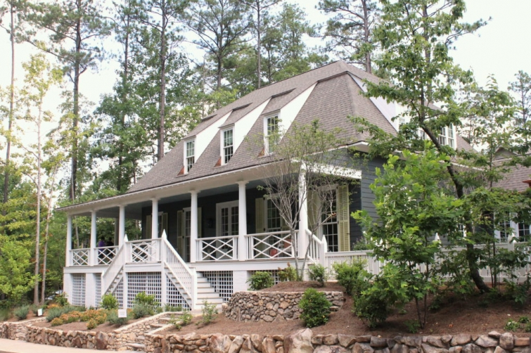
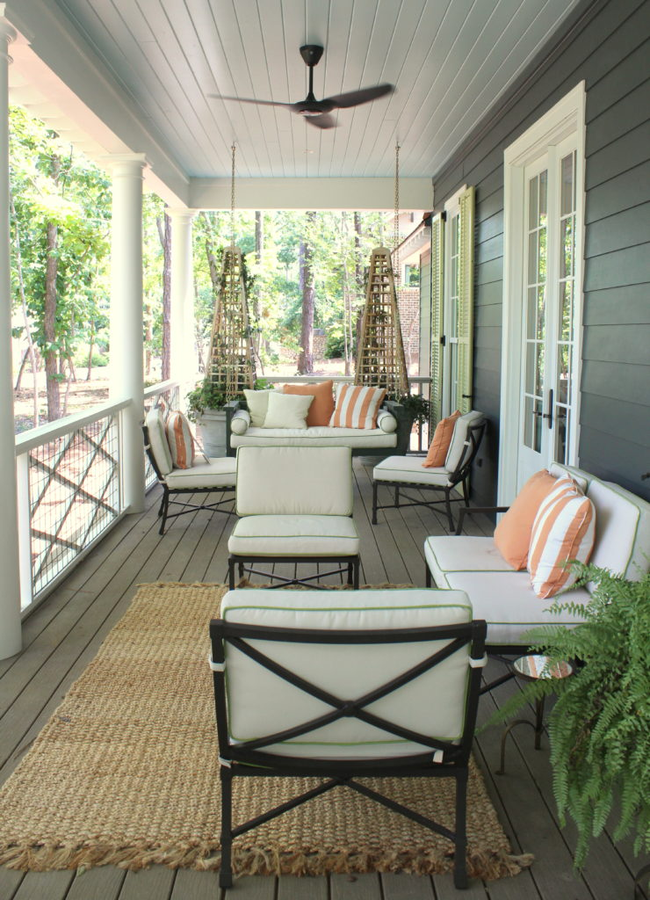
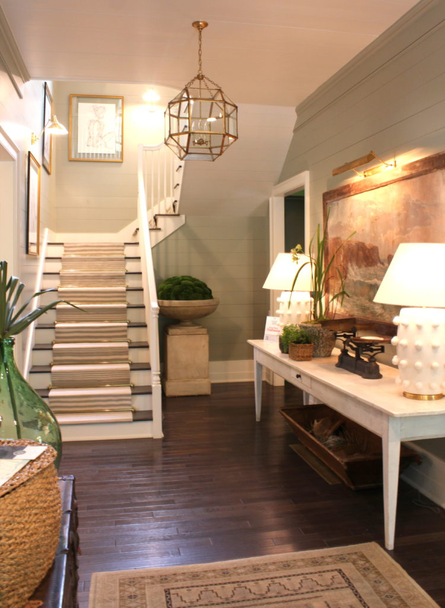

.png)
.PNG)
.PNG)
.PNG)
.PNG)
.PNG)
.JPG)
.JPG)
.PNG)
.PNG)



Southern Living has built and renovated houses all over the South, but this year for its 50th anniversary, its Idea House was built in Mt. Laurel, right outside of Birmingham, Alabama – the magazine’s own hometown and they chose a hometown architect/designer, Bill Ingram, to be the brains behind it.  Rather than have one designer do all the interiors of this house though, they chose five different designers.  Before they even began work on their rooms, the group was shown photos from old Southern Living articles and homes to use for inspiration in designing their spaces.

We toured the house early one morning the second weekend it was open.  I loved the floors throughout the house (Barlow Road by Shaw Floors in case you are interested. 🙂 )  When I go to one of these Idea Houses, I have to keep reminding myself Look for individual ideas – not the entire room.  For someone who leans toward a more minimalist but traditional design at times, these spaces can be quite overwhelming with soooo much going on in them.  They are indeed over-the-top, but they are supposed to be…that is why they are called Idea Houses.  Okay I am going to hush my preaching now and let you just peruse the rooms. 🙂
You enter the house into a large foyer designed by Ashley Gilbreath, a local designer from Montgomery, Alabama.
Beautiful antique French artwork from Parish, Ashley’s shop
 To the left of the foyer is the living room designed by Mark D. Sikes.
To the left of the foyer is the living room designed by Mark D. Sikes.
I like the framed bird prints in this room.
Going back across the foyer, you enter the very pattern rich dining room by Margaret Kirkland.
A door at the back of the dining room leads to the Bill Ingram designed kitchen.
I liked the green when we were there, but I think I would tire of the darkness after awhile.
The paint color is Evergreens, and it is by Sherwin Williams if you need a dark green. 🙂
Bill also designed the family room space with its fabric draped ceiling…
and the hallway….
and the boldly striped powder room.
I am guessing he also did the dark green laundry room, but the info on it was left out of the resource guide.
Now go back through the family room, through the kitchen, through the foyer, and back into the living room. Â On the other side of the fireplace are doors that lead to the master bedroom, designed by Lauren Liess.
She also did the master bathroom with its beautiful collection of antique pressed botanicals.
The wallpaper is a hemp burlap by Twenty2.That completes the downstairs spaces, so let’s head up the stairs.
There is a landing at the top with a table and seating…
and a gorgeous antique cupboard.
This is another Ashley Gilbreath space.
Turn left and you enter a bedroom wallpapered in a Meg Braff design.
Each of the upstairs bedrooms has its own bathroom.
Adjacent to bedroom #2 is bedroom #3, designed by Ashley Gilbreath.
The walls in it are also wallpapered (Watermill Linen by Kravet.)
Here is a peek at its private bath.
Hard to photograph a mirror without getting yourself in it.
(and your husband who is standing behind you!)
Go back across the hall and you find the Amy Berry designed 4th bedroom. Back in the 90’s, I had a sofa (or 2!) covered in a print that looked very much like that floral.
This little corner was my favorite spot in the house. (Of course it would be…the fabric is called Country Check in Light Red on Tint by Quadrille. 🙂 )
The bathroom that belongs to bedroom #4:
In the floor plan, this next space was called a playroom, but in the Idea House it is called the “pajama lounge.”
Whatever name it goes by, Amy Berry designed the space. Â I would think teenage girls would love this area.
And that finishes the tour of the interior of the house.
Here are a couple of shots outside in the patio area.
This space is right at the street, so I do not think it would be very private.The Idea House also has a detached garage, and there was an unfinished room/office above it.
(We did walk up the stairs and look in. 🙂 )
If you get a chance to visit Mt. Laurel and the Southern Living Idea House, it is open for tours until December 18.
While we were there, we rode through the beautiful community, and I have a number of photos to show you from it, but that post will have to wait until after Halloween.  I have a few things from around the house here that I want to share with you this week.  So stay tuned! 🙂
Until next time…


.PNG)
As I looked I thought, “Will the readers really like this house?”. I was happy most did not like it either. The outside is pretty but I only liked the grouping of bird paintings and the botanicals inside. The kitchen was way too dark and that dining room would drive an attention deficient person crazy. Draping that ceiling might be a little ridiculous. I am with the other girls, cleaning that would not make me happy. I still love you but that house….not so much.
————————————————————————
I knew that most readers would not like it. I had about 300 photos to go through and had originally thought about breaking it into 2 posts, but then I decided it would not be worth it because most would not want to see part 2 after part 1. 🙠So they all got whittled down to what was in the one post. There were a number of good ideas in the house, and like you, I liked some of the art. I think all of us here just prefer a different style than what the target audience of Southern Living likes. Glad you still love me even though you didn’t love the house Kathy! LOL 🙂
Kelly
When I visit model homes or idea houses, I try to think about how I would like for it to look if I lived there. I think the architecture of the home is nice. I could go for a house that has a bathroom for every bedroom. Wouldn’t that be nice? The porch looks inviting and relaxing. Love the two sinks in the kitchen and the built ins in the living room. What a treat for you to be able to visit another special home. Thank you for sharing it with us, Kelly.
———————————————————————
That is a very good thing to do, Sherry. I have a hard time doing that in a fully furnished (often overdecorated) room. You have better skills at envisioning than I do. 🙂 Thank you for pointing out a number of positive things about the house. There were some very pretty ideas in it, and I am glad you could see them! 🙂
Kelly
I agree with the kitchen, painting the walls and ceiling would definitely help. I was actually in the house and noticed that light reflected off of NOTHING in that kitchen! The house sold early on in the tour, and I wonder what modifications the buyers will make. Also, the laundry room. I had my husband take a picture of me in there beside the washer and dryer. I am 5′ 0″ tall. I could not even reach the bottom of the upper cabinets nor the back side of the counters. It looks nice in the picture but I would have to have scaffolding to do the laundry or use the upper cabinets. I have carried around enough step stools in my lifetime, thank you! (And ladders). Loved your tour, Kelly – and I love your house!
———————————————————————
Wow! I did not realize that about the laundry room. That would be a major issue for a petite person. I am glad you enjoyed the tour Vicki, and thank you for your sweet compliment on our home. 🙂
Kelly
Oh my, I think they took the “inspiration” photos to heart! I’ve seen these looks in way past SA magazines.(Like 80’s-90’s!) I doubt anyone in their right minds would drape a ceiling anymore, unless it was temporary for a party. Too much color and pattern overload for me. I did almost like the first upstairs bedroom, except the drapes. And that bath was nice, but the wall color threw me off there. Love the outside street view and the front porch and entry, but beyond that, not so much. Thanks for showing it though, as I will never get there in person!
———————————————————————
I do believe they did take the inspiration to heart. That is what Southern Living asked them to do. The exterior of the house and all of the homes in that neighborhood are beautiful. The interiors just don’t seem to go with the exterior styling…or at least what I think they should be for that style.
Kelly
Kelly,
Thank you so very much for the “e-tour”. I just loved it. Of course the green kitchen and other areas appealed to me. I love the reading nook as well. I can’t wait to see what else you have in store for us! Take care.
Dawn
——————————————————————-
You are quite welcome. You do love your green Dawn! I finally have some decorating around here to show you all. It has been hard to stay home long enough to get anything done here!
Kelly
There are so many things I like about these spaces. But, for me, that is the problem, there appears to be way too much going on! And yes, each and every corner and every furniture and decorative choice seem quite wonderful on their own… it is just a bit of an overload.
——————————————————————–
I agree with you that it is quite an overload. I wonder if it would have been different if one designer had done the entire house…maybe it would have been more cohesive then.
Kelly
Never having personally been to a show house…I appreciated knowing that they are over decorated. I couldn’t imagine living with all that furniture. And that kitchen….a little too green for my taste. The house did have some lovely elements though…thanks for the tour! 😉
——————————————————————-
At least in my eyes they are overdecorated. I think designers want to “make their mark” on each room, so it comes off as that way to me. I am glad you were able to see some of the pretty elements in it Donnamae. Thank you for taking the tour here!
Kelly
I loved the exterior of this house and the living room, but the rest was way too overdone and over thought for me. Loved the green color in the kitchen but please….not on everything!The draped ceiling was silly and what a nightmare to dust and keep clean. The dining room was crazy, there was just way too much going on and on and on….. The bedrooms had a few nice elements, but I agree with the other comments…your house has this one beat by miles.
————————————————————————
Martha, thank you for the compliment. 🙂 My house is for living in comfortably. That one was obviously for folks with entirely different tastes. I still think the pajama lounge and one of those upstairs bedrooms would be great for a teenage girl. I know our daughter would have loved that room years ago!
Kelly
We saw it not long after it opened, too, but we live here in Birmingham. I also blogged about it. That kitchen was way too dark! I would have to wear a miner’s lantern on my head so I could work in there! My favorite room was the Sikes living room. I do NOT like the tiny little bedrooms, and I thought the spaces were proportioned kind of weird. (Lots of public space, little private space.)
We actually looked at Mt. Laurel a couple of times, and I used to belong to a book club that met out there. The houses are much too close together for my liking, although they have a nice farmer’s market in the summer time.
—————————————————————————-
I thought Mt. Laurel was a very pretty community, and the homes there had some gorgeous architecture. We were there on a Saturday, and I hate we missed the farmer’s market. It was just closing up as we finished the tour. We will have to remember it when we go back to Birmingham again.
Glad you got to see the house in person Ellen.
Kelly
Once I got past the porch and foyer, both very lovely, the rest of the house is one hot mess. It this really what Southern Living thinks is an “Idea House?” The rooms Bill Ingram designed were awful. So dark and who wants to dust/clean that fabric draped ceiling? Not me! They need to turn the decorating over to you and a few other Southern Bloggers. You guys would have much better taste. The outside is beautiful, full of southern charm, but the inside looks like a 4 year old got busy with a box of crayons.
———————————————————————
I don’t think SL is going to come calling on us traditional decorator/bloggers any time soon Patty Ann. 🙂 The magazine has gone in a different direction geared toward a different audience, and yes this is what they think is an idea house. I loved the exterior and that porch. I guess everyone has their own taste and style.
Kelly
I love Bill Ingram’s work typically. I appreciate the hard work that undoubtedly goes into a design home, but I confess, I didn’t much care for this one. The good news is that there are plenty of people that probably loved it and that’s what makes the world go ’round. 🙂
Thanks for showing us the home.
Karen
———————————————————————
I normally like his work too, but this one was just too dark. I wonder how it would have been if he had done the entire house rather than just a part of it, and I also wonder if the designers had not been directed to play off of old images what the results would have been. But like you so kindly put in your comment, there are plenty of people that probably loved the house. 🙂
Thank you for reading the post Karen and for your very thoughtful comment. You worded it better than I ever could!
Kelly
Kelly: While I can appreciate this idea home, I prefer your home.
Cindy
——————————————————————
Aw, thank you Cindy. 🙂
Kelly
Well, I certainly like it more than last year’s SL Idea house. 🙂 I agree there’s always a design idea or two to take away and implement in our own spaces. My favorite was the entry and stairway. Loved the planked wall and paint color with the warm brass light fixtures. 🙂 Your husband was quite the photo bomber. 😉 Thanks for sharing Kelly!
——————————————————————-
Yes, always at least one or two ideas can be found in them. Often times, the kitchen has interesting storage ideas. My husband was definitely the photo bomber..without even trying to be! 🙂
Thanks for reading and commenting Gina.
Kelly
Thanks so much for showing Southern Living’s idea house! Like everyone else, I didn’t find much to like about the decor. I was glad for your comment on the floral fabric from the 90s! I still have a piece of the cottage rose print from back then. I remember having a solid ivory spread with throw pillows, a valance and round table cover out of the print. I must admit, I kinda miss that look!
——————————————————————
You are welcome Renee. I had tons of English floral chintz everywhere for awhile, but I do not want that look again. It was very pretty but too feminine for my now more tailored taste. It does lend itself to a cozy English cottage look though. 🙂
Kelly
I love the bumpy white lamps! The whole,house is beyond cool!
——————————————————————–
Glad you enjoyed seeing it Chris. 🙂
Kelly
I loved the first bedroom shown. The fabric and color were so pretty and not overdone.
——————————————————————-
That one certainly did have more subtle colors…making it more restful.
Kelly
Kelly: you are the third blogger (that I follow) to write and post pics from this house. AND I’m still not a fan. LOL! That green is…well green – and a bit dark. Yes – everyone has different tastes in decorating, but interestingly, I have noticed that the majority of people who have commented were not great fans of the decor, either. I’d say the yards of fabric on that ceiling were my least favorite; can you imagine the dust?! I live in the Birmingham area, and thank all of you out-of-towners who have visited our city. Y’all come back! (Looking forward to your up-coming posts on your home! You have great taste.)
——————————————————————–
Thank you Becky. We have enjoyed visiting Birmingham this year. You have some great restaurants there!
I did not think the readers here would like the house, but I am sure there are plenty of folks out there who do. We just all enjoy a more casual and less decorated vibe which is perfect for our lifestyles. I would have liked to have seen the inspiration photos that the designers saw. I think it might have put the rooms in context – not that we would have liked them any better. I just think we might have understood the design direction better.
Kelly
Too much of everything and not my style at all – I did like the round mirror with the rope hanger. I think I would like the green kitchen if it was only the cabinets painted that color and white walls.
——————————————————————–
That’s definitely a good suggestion for that kitchen Helen. I think that would be great in that space – especially with those 3 windows. Just painting the ceiling white would lighten it up some as well.
Kelly
My favorites were the Mark Sikes designed living space, Ashley Gilbreth’s spaces and Lauren Liess space. That dining room was definitely pattern laden…
——————————————————————-
Thank you for your positive comment Cindy. 🙂 If that dining room had had more subtle art, I think it would have been less overwhelming.
Kelly
WOW thanks for the reminder that often model homes are over decorated. I sure couldn’t live in that house. All I can think about with draped fabric is the dirt that it holds. I thought the kitchen was too dark too and the lights way too high to be practical. I do like the red chair fabric also.
Thanks for the visit…it was fun to see.
——————————————————————–
Yes, fun to visit, but not practical for most of us to live in. In all my years of touring showhouses, there has only been one that I felt like I could actually live in. It was in Highlands, North Carolina many years ago and decorated by Toby West. I love pretty much anything he designs. 🙂
Kelly
The kitchen is much to dark, the fabric on the ceiling is overboard for me as is the many different colors and textures in the dining room. This is a showplace house not one that children would be welcomed into. I am raising children not grass, flowers, shrubs, and raising children not a show place. No disrespect intended.
——————————————————————
And can you believe the house and all its furnishings have sold? It is meant to be a Showhouse – not a Show-home. Therein lies the difference to me. I’ll happily take a small casual cottage furnished for daily living any ol’ day. 🙂
Kelly
Just looking at the photos of the kitchen makes me feel claustrophobic – even in the brightest daylight you’d have to turne lights on! I like the coral in the dining room chairs but overall the busy-ness of that room would make me crazy.
——————————————————————-
The kitchen wasn’t as claustrophobic-inducing to me as the fabric ceiling in the family room, but yes, that kitchen was pretty dark. The coral color in the cheery dining room was a pretty color, but like you, all that pattern would make me quite crazy too!
Kelly
I liked the bedrooms but the other rooms seemed too crowded and busy. The dark green in the kitchen just seemed too dark. I did love the little nooks with the red/white chair and the one with the desk. My house is certainly no decorator’s dream! Just a comfortable, well used house for us. A house that grandchildren with sticky hands can play in! HA!
——————————————————————–
Definitely too busy for my tastes, and yes that green kitchen was dark. I think your house sounds perfect Peggy…a place where life is lived with love. 🙂
Kelly